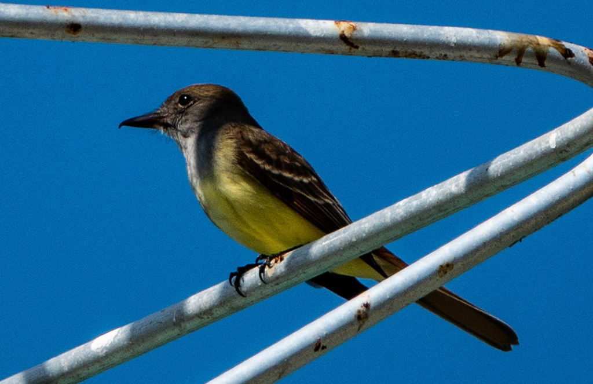

- A large, colorful flycatcher with an olive back, a lemon-yellow belly, and a rusty tail - and a famous habit of weaving shed snakeskins into its tree-cavity nest.
- Listen before you look. This bird doesn't sing so much as shout: a loud, rising "WHEEP!" that rings through the canopy and usually gives it away long before you spot it.
- A genuine aerial acrobat - it perches dead still, then bursts out to snatch a flying insect mid-air with an audible snap of the bill before swinging back to its branch.
- Keep your eyes up. This is a canopy bird that rarely drops to the ground, so scan the treetops for that flash of yellow against the green.
Olive-brown above with a gray throat and breast and a bright lemon-yellow belly. The tail and wings flash rufous (rusty) - a good field mark.
A large, big-headed flycatcher with a slight bushy crest and an upright posture when perched.
Loud and vocal. The signature call is a sharp, rising "WHEEP!" that carries through the treetops, along with a rolling "prrrreet." If you hear a bossy, far-carrying shout from high in the canopy, this is often the bird making it.
Look up. This is a canopy and mid-story bird that rarely comes to the ground - scan the treetops for a flash of yellow belly and a rusty tail, and let the loud rising "WHEEP!" lead your eyes to it.
A true flycatcher with a varied appetite. It hunts beetles, crickets, caterpillars, moths, and bees, and readily supplements its diet with wild fruit such as elderberries and blackberries. It feeds mostly by hawking - perching still, spotting a flying insect, then launching out to snap it from the air with an audible clack of the bill before looping back to its perch.
High in the canopy and mid-story of woodland edges, hammocks, and shaded park trees - rarely on or near the ground.
Spring through late summer, when breeding birds are most vocal and active (roughly March to September). They leave by early fall and are absent in winter, so don't look for them on a January walk. Listen for the loud "WHEEP!" to locate one.
Observe and enjoy.


- © Rob Carr (CC-BY-NC), via iNaturalist